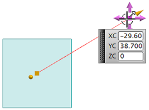

使用屏显输入框编辑直线端点位置
-
选择直线。

直线(非关联)对话框将打开，且一个带当前起点参数的屏显输入框出现。

-
点击直线右侧端点以显示它的屏显输入框。

-
在屏显输入框的 XC 输入框中，键入0并回车。
选定的直线端点将移动到您指定的位置，而其它端点保持固定。
-
在 YC 输入框中，键入50并回车。
直线端点将再次移动。
-
按 F3 键以隐藏屏显输入框.
-
在直线(非关联)对话框中，点击取消。